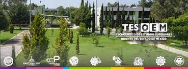

TESOEM
Tecnologico de estudios superiores
del Oriente del estado de Mexico
Materia: Programacion WEB
Grupo: 7S21
Miguel Angel Mendez Flores
20 de septiembre del 2021
Mi estancia en la escuela a sido placentera ya que e conocido buenos amigos
asi como e adquirido mucho conocimiento en programacion, diseño y redes
me gustaria que nos enseñaran mas tecnologias como puede ser el blockchain
ya que creo que lenguajes como solidity que es el lenguaje en el que estan escritos
los contratos de ethereum sera a un corto plazo muy demandado asi, como deberian
hacer cambios en los lenguajes que se enseñan, ya que tecnologias como python, go, etc.
empiezan a desplazar lenguajes que llevamos como java y c/c++, que si bien no digo
que desapareceran, ahora en lo laboral son menos demandados que las tecnologias
que llevamos en el tecnologico.
Asi como que tambien me gustaria que llevaramos mas areas como de seguridad informatica
que apoyaramos el uso de software open source, que llevemos mas uso en GNU/Linux
Pero en general a sido placentera la estancia.